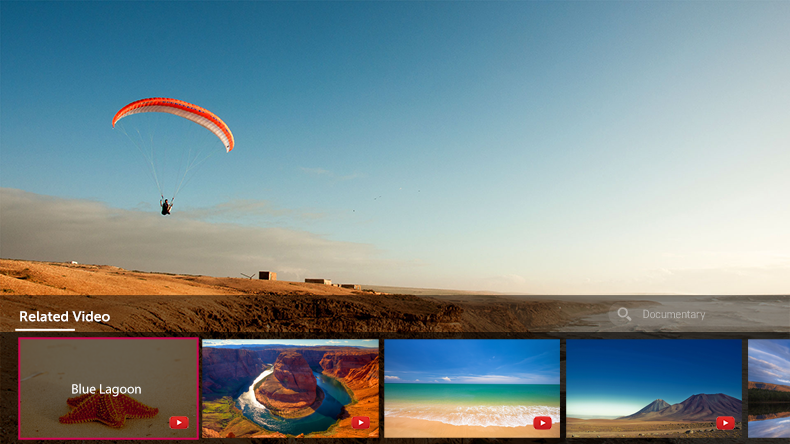

Uso de CONEXIÓN MÁGICA
Ofrece diversos vídeos e información relacionada con el programa que esté viendo en ese momento.
-
Pulse el botón del mando a distancia.
Aparecerá el visor de canales.
- Pulse el botón CONEXIÓN MÁGICA en el visor de canales.
-
Aparecerán distintos tipos de información relacionada con el programa que está viendo en la parte inferior de la pantalla.
Seleccione la información que desee.
Esta función solo está disponible en algunos modelos.
El rango de búsqueda puede variar según el país.
Mientras CONEXIÓN MÁGICA está en uso, es posible que los contenidos proporcionados no coincidan con el programa que está viendo en ese momento.
Cambie el canal con el mando a distancia Mágico antes de utilizar CONEXIÓN MÁGICA.
Algunos canales para adultos o canales bloqueados no son compatibles con esta función.
Los resultados de búsqueda pueden variar según la información del programa que esté viendo.